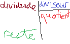

Bon bah y a tout le programme d'informatique globalement, que dire de plus. Sauf que cette fois c'est la révision des semestrielles du deuxième semestre!
N'hésitez pas à aller voir la révision du premier semestre si vous ne l'avez pas encore fait, c'est mieux pour comprendre. Tout au long de cette page vous trouverez des notes comme celle-ci qui définissent des mots, n'hésitez pas à cliquer dessus pour voir la définition en bas de la page. Comme toujours, ce qui est dit dans cette page n'est nullement garanti d'être correct, il en est de la responsabilité du lecteur de vérifier les informations présentées. Cette page est toutefois vérifiée au possible et adaptée au champ.
Déjà brièvement abordé dans le semestre précédent, mais n'étant pas approfondi, voici une version plus complète et qui couvre le champ.
Syntaxe 1 de définition d'une variable2 de variable :
nom = "valeur" # nom "égal" valeur
nom="valeur" # on peut omettre les espaces,
nom = "valeur" # aussi bien qu'on peut en mettre pleinIl y a plusieurs règles concernant le nom, les règles strictes, et les conventions.
Si on ne les respecte pas, il y aura une erreur 3.
_AZaz09 = "salut" # une variable peut contenir ces caractères là, et rien d'autre (et les lettres / chiffres compris dedans, bien sûr)2pac = "rappeur" # une variable ne peut pas commencer par un chiffre
while = "pendant" # une variable ne peut pas être un mot réservé de Python Une variable est sensible à la casse 4, les deux variables qui suivent sont différentes
foule = "gens"
Foule = "personnes"
Bon en vrai, j'ai menti, on peut mettre des accents. Mais ça ne veut pas dire qu'il faut en mettre! C'est l'une des conventions. Les règles suivantes sont données sans ordre particulier.
Il faut que le nom soit pertinnent
x = 180 # ça va si on a que une ou peu de variables, mais c'est préférable d'avoir un nom plus explicite, tel que:
angle_triangle_bleu = 180 # c'est mieux!Dans l'exemple d'avant, on a utilisé le snake case pour délimiter plusieurs mots. Il existe d'autres manières reconnues:
snake_case = "forêt" # on met des underscores entre chaque mot
camelCase = "forêt" # On met une majucule au début de chaque mot sauf le 1er, est plus utilisé
PascalCase = "forêt" # On met une majuscule au début de chaque mot
On ne met pas d'accents (bien que ce soit possible)
érable = "arbre" # non!Jusque là, on n'a parlé que du nom de la variable, la partie gauche, mais ce qui est important, c'est la partie à droite. Il y a plusieurs types de choses qu'on peut mettre, et c'est le type. python va mettre le bon type tout seul.
Exemples
nombreEntier = 1 # integer
booleen = True # opérateur logique, sera vu plus tard avec les conditions
booleen2 = False # l'autre opérateur logique
chaine_de_caractere = "string" # un mot / phrase
valeurDePi = 3.1415926 # nombre décimal (je l'ai eu de tête lol), notez qu'on utilise un point et non une virgule
flottant = 70 / 5 # on peut mettre un calcul, la variable aura la valeur du résultat
# à noter que le type du résultat de la division sera toujours un float, même si le résultat donne un nombre entier. Ici, 14.0
il_y_en_a_encore = ['d\'autres', 'mais', 'ça', 'dépasse', 'le', 'cadre de ce document'] # listeOn peut aussi assigner une variable à une autre variable:
x = 1
y = x + 1Cependant on ne peut pas assigner une variable à quelque chose qui n'existe pas encore:
x = y # invalide
y = y + 1 # invalide aussiOn peut bien sûr manipuler des variables sans les définir:
x = 1
y = 2
print(x + y) # Résultat = 3
On peut transformer un string en integer avec int(). On peut aussi transformer un float en int avec int(), cela va enlever la virgule. (Il en existe d'autres, mais ce n'est pas dans le cadre de cette leçon)
soixante_neuf = "69" # ici, ça représente les caractères "6" et "9", pas le nombre
soixante_neuf = int(soixante_neuf)
print(soixante_neuf + 1) # Résultat: 70
nombre_a_virgule = 143.2
print(int(nombre_a_virgule)) # Résultat: 143
On ne peut pas mélanger les types! Il faut les convertir avant.
x = 10
y = "11"
print(x + y) # Erreur! On aurait dû faire << y = 11 >>
La fonction int() n'est pas non plus infaillible:
x = "123mot456"
x = int(x) # Erreur! int() ne marche qu'avec des nombres.
L'utilisateur n'a pour l'instant pas la possibilité d'intéragir avec le programme. C'est là que input() intervient.
Syntaxe
x = input("Entrez votre nom: ")
print(x)
# Résultat, ce qui va être affiché:
Entrez votre nom: *zone de texte*
# x sera égal à ce que l'utilisateur a mis.
*le nom de l'utilisateur*Notez que ce qui est affiché est exactement ce que vous avez mis dans input, donc pensez à mettre les deux points et un espace pour que ce soit plus agréable!
Vous verrez souvent input() en conjonction avec int():
x = int(input("Entrez un nombre à multiplier par deux: "))
# ou
x = input("Entrez un nombre à multiplier par deux: ")
x = int(x)
print(x+x)
# ou
print(2*x)C'est pratique pour définir des strings, mais, par défaut, le type de l'entrée d'input est le string, donc on ne pourra par exemple pas faire:
x = input("Entrez un dividende: ")
y = input("Entrez un diviseur: ")
print(x//y) # Erreur!
# une erreur peut aussi être l'inversion des deux:
x, y = input(int()), input(int())
Une fonction est une "macro" ou un "raccourci" qui permet de faire une série d'opérations ou d'appels de fonctions facilement. Vous connaissez déjà des fonctions; int() ou encore input(), mais ici on va parler des commandes "personnalisées", avec ou sans arguments. La fonction définie par def maFonction() elle-même ne fait rien, il faut également l'appeler avec maFonction() ensuite! Les règles de nommage sont les mêmes que pour les variables.
Exemple
def rectangle():
forward(160)
left(90)
forward(160)
left(90)
forward(160)
left(90)
forward(160)
left(90)
# ou mieux
def rectangle():
for i in range(4):
forward(160) # il faut bien indenter *DEUX* fois!
left(90)
Comme dit précédemment, pour l'instant, ça ne fait rien, il faut ensuite l'appeler:
def rectangle(): # ce n'est que la définition
for i in range(4):
forward(50)
left(90)
rectangle() # là, ça va faire un rectangle
On peut les combiner avec des boucles pour en faire beaucoup plus:
def rectangle50():
pass # IDEM à avant, "pass" veut dire "ignorer, ne rien faire"
def espace10():
forward(10)
left(30)
for i in range(8):
rectangle50()
espace()Une fonction avec argument est une fonction qui a quelque chose dans sa parenthèse, donc par exemple forward(n) que vous connaissez déjà. La valeur que prendra "n" est l'argument. On peut aussi parler de paramètre, la différence est que le paramètre est le nom de la variable qui va être utilisée dans la fonction, donc "n" est le paramètre. Quand on fait forward(10), 10 est le paramètre. En clair, un argument est une variable qui est donnée à la fonction. (Si l'explication n'est pas assez claire, vous comprendrez avec les exemples.)
Exemple
def carre_de_taille(cote):
for i in range(4):
forward(cote) # on utilise un argument!
left(90)
carre_de_taille(100) # ne pas oublier de l'appeler!
Maintenant que notre fonction requiert un argument, si on ne passe pas d'argument, il y aura une erreur. Ainsi, dans l'exemple précédent, le code suivant entrainera une erreur:
carre_de_taille() # Erreur!On peut bien sûr mettre plusieurs arguments. (page qui détaille très bien les fonctions) Utilisation de base:
def additionner(a, b):
return a + b # "return" fait comprendre à python que la fonction vaut maintenant ça.
print(additionner(10, 12)) # Résultat: 22
# ou
def polygone_regulier(cotes, taille, angle):
for i in range(cotes):
forward(taille)
left(angle) # ou "360 / cotes", et on a pas besoin de l'argument angle
polygone_regulier(4, 100, 90) # carré
polygone_regulier(5, 100, 72) # pentagone
Les valeurs que peuvent prendre les conditions sont le booléen, soit True (vrai) ou False (faux). 0 et 1 sont respectivement False et True. Il existe des opérateurs logiques - c'est comme ça qu'on appelle les opérations en rapport avec les booléens - qui permettent de les manipuler:
print(10 > 9) # True
print(10 == 9) # False, vérifie si 10 est égal à 9, à ne pas confondre avec le égal unique qui assigne une valeur à une variable
print(10 != 9) # True, vérifie si 10 n'est pas (égal à) 9
print(10 < 9) # False
print(10 >= 9) # True, vérifie aussi si c'est égal, revient à:
print(10 > 9 or 10 == 9)
print(True - True == False) # True, 1-1==0
print(not True) # False, "not" commute le booléen.
print(True or False) # True, Vérifie si l'un des deux est vrai
print(True and False) # False, Vérifie si les deux sont vraisUn exemple, l'expression suivante:
print(10 <= 9 or 1 != 30 // 6)Python va l'évaluer selon l'ordre des opérations, donc à la prochaine étape ce sera:
print(False or 1 != 5), et enfinprint(False or True) # Résultat: True
Le bloc si est étroitement lié aux conditions; en réalité c'est basé sur ça. "Bloc" car c'est aussi un mot qui requiert une indetation, tel que for, if ou le futur while.
Exemples
x = 9
y = 10
if x == y: # C'est là
print("x est égal à y")
if (x != y and x > y): # on met des parenthèses pour plus de clarté, bien que ce soit facultatif
print("x n'est pas égal à y")
Il bien mettre un double égal:
x = 10
y = 11
if x = y: # Erreur!
L'exemple précédent avec les deux "if" marche, mais il existe une manière plus élégante d'exprimer "si c'est faux, essayer" ou "sinon", à savoir elif et else.
x = 10
y = 11
if x == y:
print("x est égal à y")
elif x > y:
print("x est plus grand, leur différence est", x - y)
else:
print("y est plus grand, de", y - x)
Une erreur qu'on peut faire, c'est d'être tenté de donner une condition à else:
x = 10
if x !=10:
print("x est égal à dix!")
else x == 10: # C'est superflu et même faux!
print("x n'est pas dix!")
En résumé, if est une condition, et peut être utilisé séparément. elif, lui, n'est évalué que si son if parent (car il ne peut pas être utilisé seul, il a besoin d'un if avant) est faux. else peut être utilisé après un if ou un elif et le code contenu à l'intérieur n'est éxécuté que si les deux conditions précédentes sont fausses.
whileLa boucle for diffère de la boucle while, car on utilise cette dernière lorsqu'on ne connait pas le nombre de répétitions. Elle a besoin d'une indentation. Elle utilise une condition pour boucler. On évite de définir des boucles infinies (où la condition serait True tout le temps), sauf si on utilise un if contraire et break. Chacune de ces phrases va être illustrée d'un exemple.
Exemple : on essaie de voir le nombre de chiffres entre 1 et le nombre qu'un utilisateur entre
nombre_a_chercher = int(input("Entrez un nombre. On verra combien de nombres il y a entre celui là et 15. :"))
compteur = 0
if nombre_a_chercher < 15:
while 15 > nombre_a_chercher:
nombre_a_chercher += 1 # équivalent à nombre_a_chercher = nombre_a_chercher + 1
compteur += 1
elif nombre_a_chercher == 15:
print("C'est 15!")
else:
while 15 < nombre_a_chercher:
nombre_a_chercher -= 1
compteur += 1
print("Il y a ", compteur, "nombres entre votre entrée et quinze.")
On ne fait pas de boucle infinie (note, si vous le faites sur les Mac de l'école, faites Ctrl (oui, pas Cmd) + C dans le terminal / Interpréteur Thonny pour arrêter le programme) sauf si on a prévu un if avec un break:
compteur = 10
while(not compteur == 15): # ça va continuer à l'infini et ce n'est généralement pas ce que vous voulez faire.
# La plupart du temps, c'est un signe inversé, la mauvaise opération ou une condition impossible
print(compteur)
compteur = 2 # ç'aurait aussi pu être un égal mal placé, ou les mauvaises valeurs. Ici, les deux sont illustrées.
Le code précédent n'était qu'un exemple sans réel but. Ci-après un exemple illustrant l'usage de boucles infinies et de if/break, bien que personnellement je trouve que c'est inutile (ou n'ai pas encore eu l'occasion d'en avoir l'usage) car il peut généralement être remplacé par not suivi de la condition
compteur = 0
nombre = int(input("Entre un nombre INFÉRIEUR à 100: "))
while True:
nombre += 1
compteur+=1
if not (nombre < 100):
break
print(compteur)
# pourrait être remplacé par un, plus simple,
compteur = 0
nombre = int(input("Entre un nombre INFÉRIEUR à 100: "))
while (101 > nombre):
compteur += 1
print(compteur)
Ici vous retrouverez certaines définitions de "mots techniques" qui sont trop brefs pour mériter leur propre chapitre.
1: comment on utilise concrètement, ça veut dire que si vous copiez collez cette partie dans votre code, ça va être valide
2: Définir une variable ou une fonction, c'est donner un sens à un mot. Si un mot n'a pas de définition, on ne pourra pas l'utiliser, et il y aura une erreur. C'est un peu comme le français, si on utilise un mot qui n'existe pas il y a un problème.
3, note: Erreur: notez que, quand il y a une erreur de syntaxe, les couleurs ("coloration syntaxique") ne sont pas ce qu'elles devraient être
4: la casse d'un mot est le fait qu'elle soit en MAJUCULE ou en minuscules, sensible à la casse signifie que "Poire" n'est pas égal à "poire" ou encore "PoIrE".
(Cette page s'inspire grandement du style de cet article, le contenu n'est pas le mêeme)
Retour à l'accueil